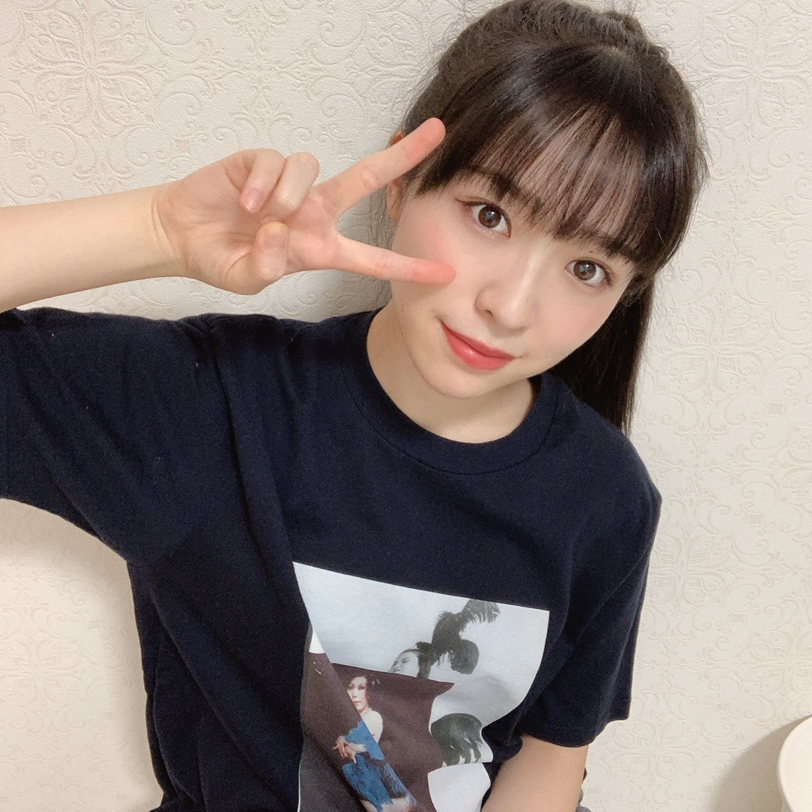
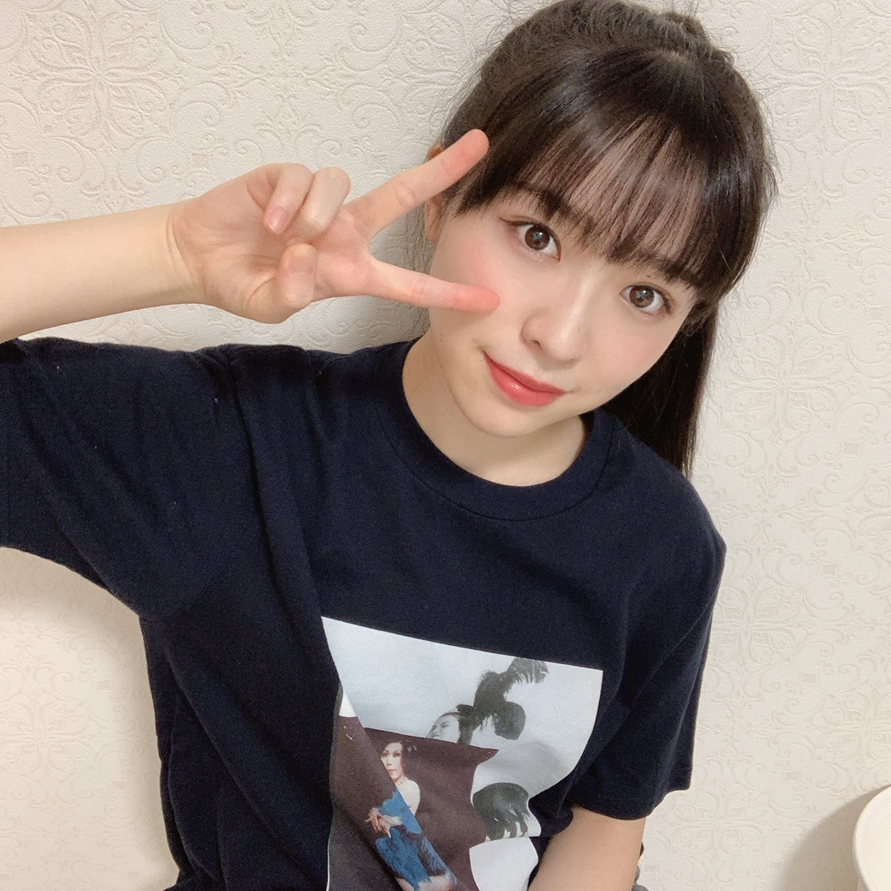

2020/0927Sunぼさっと鯨

涼しくなってきてニットやスウェットを
出し始めました。
袖に腕を通した時の全部の肌が保護される
あの感覚が好きなんです〜
そういえばお仕事で私がぼーっと
突っ立っていて誰か近づいて来たなあと
思ったら田村真佑ちゃんでした。
基本的に真佑ちゃんは
来ても秒で突き離します（＾ω＾）
でも嬉しそうにまた近づいて来るから
たぶん大丈夫。笑
私の事好きすぎるんだなあ、困ったなあ
これが愛情ってやつよ（＾ω＾）

髪伸びましたね。
最近は色々な宿の情報や温泉の情報を
かき集めて見る生活を送っています。
早く行きたい、、宿と温泉回りたい、、

THE CONVENI × Mame Kurogouchi
のコラボTシャツ
発売と同時にお店に買いに行ったなあ
懐かしい
常温の水しか飲めなくなったここ最近。
前は無理やり常温の水飲んでいた時期も
あったのに、気が付いたら常温しか
受け付けない体になってしまったよ
冷え性やダイエット対策！
ちなみに生誕Tシャツの裏面のデザインは
アイスランドポピー。
覚えて下さっている方が
沢山いて嬉しかったです
みり愛
涼しくなってきてニットやスウェットを
出し始めました。
袖に腕を通した時の全部の肌が保護される
あの感覚が好きなんです〜
そういえばお仕事で私がぼーっと
突っ立っていて誰か近づいて来たなあと
思ったら田村真佑ちゃんでした。
基本的に真佑ちゃんは
来ても秒で突き離します（＾ω＾）
でも嬉しそうにまた近づいて来るから
たぶん大丈夫。笑
私の事好きすぎるんだなあ、困ったなあ
これが愛情ってやつよ（＾ω＾）
髪伸びましたね。
最近は色々な宿の情報や温泉の情報を
かき集めて見る生活を送っています。
早く行きたい、、宿と温泉回りたい、、

THE CONVENI × Mame Kurogouchi
のコラボTシャツ
発売と同時にお店に買いに行ったなあ
懐かしい
常温の水しか飲めなくなったここ最近。
前は無理やり常温の水飲んでいた時期も
あったのに、気が付いたら常温しか
受け付けない体になってしまったよ
冷え性やダイエット対策！
ちなみに生誕Tシャツの裏面のデザインは
アイスランドポピー。
覚えて下さっている方が
沢山いて嬉しかったです
みり愛
2020/09/27 19:12


コメント(426)
またモバメの写真が増えてとっても幸せな気分です！
体調には気をつけてください！
ブログ更新ありがとう⁉︎
大人っぽくなって良き〜〜
髪伸びたね！！最高に可愛くて好き！！！
はやくあいたいなぁ！！！
今日もかわいいです(^_^)
常温の水どころか水さえも飲めなくなってしまいました
ここ最近。
頑張って飲めるようにならないと
頑張るね笑
生誕グッズのデザイン凄く素敵でした、、
みり愛ちゃん可愛すぎて癒されます♡
早く会いたいです！！だいすきです！！
生誕Tシャツ買ったよー！
まゆたん可愛いね！みり愛ちゃんに早く会える日がくるといいな！
秋っていいよね！
常温の水飲めるけど好きじゃない…笑
アイスランドポピー覚えてたからよかった！
生誕グッズ買ったよ〜
届くの楽しみ！
これから涼しくなるので身体に気をつけてねー
温泉良いですよね。
私はよく車で田舎の温泉に行きます。
握手会などで話したいです笑
体調にはお気を付けくださいねー
生誕Tの花はすぐ分かったよ！！！
熊本に黒川温泉ってところと草枕温泉ってあるんだけどおすすめ！
最近のびっくりするくらい寒くなってきたね〜
今日は秋服を買いに行ったんだけどいつもなら握手会で見せに行けるのに見せれないのショックだなぁ…
早くみりあに会いたい！
ツンデレみりあもかわいいね笑
生誕Tはもちろん買わせて頂きますm(_ _)m
これからも体調に気をつけて頑張ってね！
この前の猫舌でれんかにツンデレしてたのに真佑ちゃんにもツンデレ発揮してるのかみり愛ちゃん笑笑
髪も伸びてもうすぐ21歳の誕生日で大人みり愛ちゃんだねえ〜
生誕Tのアイスランドポピーは、、、覚えてませんでしたごめんなさい！覚えました！はい！
みり愛ちゃん体調にお気をつけて
生誕T今年もオシャレだね〜
アイスランドポピーは俺も大好きな花になったよ
みり愛推しにとっても大切な花だよね
最近肌寒くなってきたね
夏と秋の今の時期が一番好き！
なんか運動会とかこの時期だったからすごく懐かしい気持ちになる
アイスランドポピー、懐かしいです。
うらやましい愛情ですね。笑
じゃあね。
最近肌寒くなってきましたね〜！
体調も崩しやすい季節なので気をつけて頑張りましょー！
生誕グッズも買いますねー！
僕も最近長袖出し始めましたが
僕の住んでる福島県は毎日寒暖差が激しくって困ってます
この時期の東京ってどんな気候なんですか？
是非教えてください
みりあちゃん！本当、綺麗になったね！(*^^*ゞ
生誕Tはもれなく予約済みです
アイスランドポピーは握手会の祝花に入れたりしてたなー
早く生誕Tきてイベントいきたいー
たしかに最近涼しくなりましたねぇ寒いくらいです笑
誕生日まで約1ヶ月ですね！お祝いできるのが楽しみです！
髪伸びても可愛い！
早く会いたいなぁ
誕生日まであと1ヶ月ちょっと。
楽しみ！！
またブログ更新楽しみにしてるね！
まゆたんとの絡み面白すぎる（笑）
後輩がそうやって絡んできてくれるのは嬉しいよね。
たっぷりの愛情で後輩達の面倒を見てあげてね！
これから面白いエピソードとかあったら教えて欲しいな！
髪伸びたよね！短い頃のみり愛ちゃんがなんだか懐かしい（笑）
そろそろ旅行とか行きたくなるよね、自分は北陸の方に行きたいなって最近思ってる。特に金沢！美味しいもの沢山食べて温泉入ってリフレッシュしたい（笑）
コラボTシャツすごくオシャレで可愛い！
常温水か、ちょっと前まで暑かったから冷たい飲み物しか飲んでなかった、、俺も常温水とか体があったまるもの飲もうかな（笑）
アイスランドポピー、忘れるわけありません！みり愛ちゃんにとってもみり愛ちゃん推しにとっても大切なお花だもん！
だんだん寒くなってきてるから体を冷やさないようにお互い気をつけようね。
ものすごい髪伸びましたね！
色んなアレンジもできるような気がしております。
新型コロナウイルスの影響で握手会等が行うことが困難であり、みり愛ちゃんに会えないのが悲しいです。
でも感染症にかかってしまえばまたこういう形でイベント等何も出来なくなってしまいますので我慢の日々ですね。
新型コロナウイルスにかからないよう気をつけて過ごして行きましょ〜！！
風船は生きているをLIVEで見たいです！
みり愛って叫びたいです！！
他人に優しく生きていこうと思います！
思いやり大事！
髪長いの可愛いです！！
背が小さいのも可愛いです！笑
めっちゃ楽しかったです
夏が終わって徐々に秋が深まりつつあるんだなーと感じるここ最近。
自分は長袖の服を着るとついつい腕まくりしちゃうかな笑
みり愛ちゃんって結構ツンデレな一面があるような笑
可愛い後輩ちゃんがいて微笑ましいです。
暗めの髪色でロングもかなり似合ってて良き。
遠出してゆっくり温泉浸かりたいね。
上がったら美味しいご飯食べてのんびりリフレッシュしたい！
常温はどうしても苦手だなー
ついついキンキンに冷えたものを求めてしまう笑
アイスランドポピー
忘れることはないと思うよ。
東京体育館でのアンダラの景色やみり愛ちゃんが頑張ってた姿とか色々含めてね。
生誕Tが手元に届くのが楽しみ！
ではまたね！
hideto
最近はいつになったらみり愛ちゃんに会えるのかなーと思いながら毎日を過ごしています。
まゆたん。笑 みり愛ちゃんは後輩にも愛されるねぇ〜笑
可哀想だから突き放しすぎないように
やっと秋だね。秋はみり愛ちゃんの季節だなーって思うよ笑
アイスランドポピーはギリギリ思い出して分かったよ！生誕Tシャツもちゃんと買ったから次会える時には着ていくね。
今年はみり愛ちゃんのお誕生日を握手会でお祝いできなくてとても残念だけど家ではしっかりお祝いするからね。笑
それでは、これからも体調にはお気を付けて。
田村真佑ちゃんのその様子を思い浮かべただけで、可愛くてにやけそうになるね笑 みり愛と真佑ちゃんの絡み見たいな〜
アイスランドポピーだったのか！名前はわかるよ、みり愛が好きって言ってたからね〜メモ帳にもメモされてる
けど、うん、見た目ではまだ判断できなかった…まだまだだな〜って思い知りました。次はすぐに答えを言えるようになります！
あと、生誕Tのデザイン好きだった！ 普段着として着るかな〜^ ^
涼
まゆたん突き放すのはおもしろすぎ笑
結構誰でもツンケンするよね笑笑
そういうところ、うそなくて好きなんだ〜
やっぱりみり愛かわいい、ポニーテールやば！！
みり愛ちゃん今日も１日お疲れ様です。
みり愛ちゃん今日も可愛いです。
今日はお仕事でした。
今日はバタバタして疲れました。
今日はミスをして朝から怒られました。
凄く悲しかったです。
次はミスをしないように気を付けます。
こないだ生写真届きました。
みり愛ちゃん出て凄く嬉しいです。
昨日みり愛ちゃんの生写真を買いに行きました。
凄く可愛いみり愛ちゃんの生写真をたくさん買いました。
これからもみり愛ちゃんの生写真買いますね。
これからもお仕事頑張って下さい。
自分もお仕事頑張ります。
これからのブログを楽しみにしてます。
ブログ更新ありがとう！！
ライブ近ずいてきましたけど、どうですか？
楽しみにしてます！笑
これからも元気な姿を見せてください！
最近めっきり寒くなりましたね
肌触りの良い長袖に腕を通すあの感覚、私も好きです笑
温泉行きたいねー。これから寒くなるとよりぽかぽか気持ち良いもんね。おすすめを見つけたら教えてね！
またね:-)
髪長いみり愛ちゃん似合ってる！かわいい♡
早くみり愛ちゃんに会いたいなぁって気持ちでいっぱいです！！！
またコメントするね！大好き♡
温泉旅行とかいろいろなところ回ってみたいねー！
もう肌寒い季節になってきたねー夏より秋冬のがお洒落するのが
楽しい季節だねー！風邪ひかないように暖かい格好してねー！
次のブログ更新も、楽しみにしてるねー
みり愛ちゃんのブログ、大好きです♡
これからもずっと応援してます！ 大好きです♡♡♡
人見知りのあなたがまた後輩と仲良くなったみたいで嬉しいです。
寒くなってきて、コロナ感染症だけでなくインフルエンザも流行ってきますのでお身体には気をつけてくださいね。
お手紙を只今執筆中です。久々になります。早めに投函します。
いつも前に進む元気と勇気をありがとう。
髪伸びたね～(゜ロ゜)
ロングのみり愛ちゃんもめっちゃ可愛いです。
まゆちゃん面白いね笑
みり愛ちゃんには後輩が寄ってくるね笑笑
ようやく最近涼しくなってきて過ごしやすいね～
ランニングしてる自分からしたらいい季節になってきて最高です！！！
みり愛ちゃんは暑いのと涼しいのどっちが好き？？
10月から本配属になってまた社会人として新しい1歩を歩きます！！！
辛くなったらみり愛ちゃんのことを思い出して頑張ろうと思います(*´･ω･)
みり愛ちゃんにはいつも元気をもらっています！！
モバメとブログありがとう！！
また更新待ってまーす( *´艸｀)
ドアップのイヤホンしてるみり愛たん可愛い(｡>﹏<｡)
そしてさすがまゆたんだな
本当にみんなとらぶらぶぐらい仲良いよね(*´ω｀*)
後輩なのになぜかみり愛の方が妹に見えるかな？（笑）
二人の猫舌SHOWROOMも見たいなあ＼(^o^)／
髪の毛はたしかに結構伸びたよね
でもみり愛はみり愛だから、こっちでも好きだよ(*´ω｀*)♡
これからも頑張って(/･ω･)/
コメントする